Turnout · tour final · deux studios, six idées
Studio A a cherché une seconde vie au radar : une porte, un verre, une foule. Studio B a cherché l'idée dans la lettre et dans le geste : un n retourné, un sceau de brasserie, une façade ouverte. Chaque carte montre le lockup, la marque de 64 à 16 px, le favicon dans un onglet et l'en-tête réel de l'app. Les pages complètes des studios sont liées sous chaque carte.
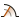
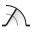
L'idée. Sur un plan d'architecte, une porte se dessine avec une charnière, un battant et un quart d'arc. C'est exactement un balayage radar : le battant est la lisière ambre, l'arc l'anneau, la rémanence la lumière qui franchit le seuil. Deux bouts de mur font la porte.
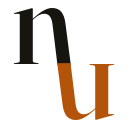
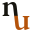
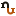
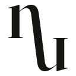
L'idée. Le n de Fraunces, et le même n retourné de 180° autour du pied de sa hampe, réunis en une diagonale. Arche encre au-dessus de la ligne, coupe ambre en dessous : l'arena et le verre sont la même forme, retournée. Se lit pareil à l'envers.
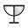
L'idée. Un demi-radar suspendu à une ligne forme un T majuscule. Avec un pied, c'est une coupe, et la rémanence devient le verre. Verre en encre, balayage et lueur en ambre.
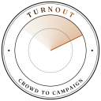
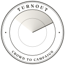
L'idée. Un sceau de brasserie dont le champ intérieur est un vrai radar : anneaux, lisière nette, rémanence. La rémanence continue dans les lettres du bord, qui se lisent TURN en encre et OUT en ambre. Sous 96 px, il perd les lettres et redevient le radar nu.
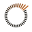
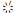
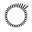
L'idée. Trente-six graduations comme les tribunes d'un stade. La ola se lève à la lisière et se rassied derrière, ambre vers encre. La rémanence est faite de gens. Pensée comme animation de chargement.
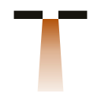
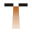
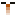
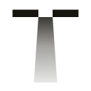
L'idée. Le mot se sépare en "Turn" et "out". La ligne de base devient une façade vue du dessus, avec une ouverture de porte d'où la lumière chaude tombe sur le trottoir. Recadrée, la porte est un T : le mur est la barre, la lumière la hampe.
The Turn est le plus beau comme objet, mais il parle de typographie plus que de foules, et la lecture "nu" est un risque gratuit. The Opening est une idée de campagne plus qu'une marque. Coupe enferme Turnout dans le bar.
Si tu veux une surprise assumée plutôt qu'une marque sûre : The Turn en monogramme, Swing en marque produit. Sinon : Swing, point.